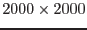
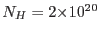
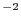

This task combines the images produced for individual observations into larger field mosaics. This includes the event and exposure images (output from mos-spectra), QPB background images (output from mos_back processed by rot-im-det-sky), and the soft proton images (output from proton also processed by rot-im-det-sky). Pixel size, coordinate system, and central coordinates are all user selected. The output images are  pixels.
merge-comp-xmm compensates for the inclusion of observations with different filters in the mosaic. It uses the results of PIMMS with the assumption of a power-law spectrum with photon indecies (alpha) of 2.4, 1.7, and 1.0, and absorption of  H I cm. The user enters a vlaue for alpha between 1.0 and 2.4 where 1.0 will select the hard spectrum, 1.7 selects the medium spectrum, and 2.4 selects the soft spectrum. Intermediate values will produce a linear scaling between the two nearest spectra. The exposure image is then scaled by the ratio of the model count rates for the medium filter versus the thin or thick, making the resultant image appropriate for the medium filter.
Warning and requirements: merge_comp_xmm is part of the package esas, integrated into SAS, but (still) limited to work within esas' data reduction scheme. This is specially true wrt input files structure and names. In particular, merge_comp_xmm assumes that other tasks from the package, mos-spectra / pn-spectra, proton and rot-im-det-sky have been successfully run for the exposures to be used.